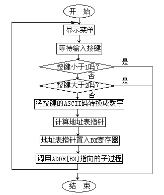

那么我们为什么说这两条指令仅用于相同符号的数呢？解决这个问题我们还得靠DEBUG来帮忙：
C:\ASM\>DEBUG[Enter] -a[Enter] 13CD:0100 mov ax,-1 13CD:0103 mov bx,1 13CD:0106 cmp ax,bx 13CD:0108 ja 120 13CD:010A -r AX=0000 BX=0000 CX=0000 DX=0000 SP=FFEE BP=0000 SI=0000 DI=0000 DS=13CD ES=13CD SS=13CD CS=13CD IP=0100 NV UP EI PL NZ NA PO NC 13CD:0100 B8FFFF MOV AX,FFFF注意-1的补码表示
-1的补码为0FFFFH，但这个数如果作为无符号数它又是"+65535"，CPU究竟如何处理这个数呢？
-t AX=FFFF BX=0000 CX=0000 DX=0000 SP=FFEE BP=0000 SI=0000 DI=0000 DS=13CD ES=13CD SS=13CD CS=13CD IP=0103 NV UP EI PL NZ NA PO NC 13CD:0103 BB0100 MOV BX,0001 设置BX寄存器为1
在跟踪CMP指令之前，请大家注意带有下划线的几个标志寄存器的状态，这些标志寄存器在执行完CMP指令之后会发生一些变化。
-t AX=FFFF BX=0001 CX=0000 DX=0000 SP=FFEE BP=0000 SI=0000 DI=0000 DS=13CD ES=13CD SS=13CD CS=13CD IP=0106 NV UP EI PL NZ NA PO NC 13CD:0106 39D8 CMP AX,BX
下面是执行CMP指令后的结果，请注意加有下划线的标志位，其中符号位SF由"PL"变为"NG"，说明运算结果为负，CF标志没有发生任何变化。
-t AX=FFFF BX=0001 CX=0000 DX=0000 SP=FFEE BP=0000 SI=0000 DI=0000 DS=13CD ES=13CD SS=13CD CS=13CD IP=0108 NV UP EI NG NZ NA PE NC 13CD:0108 7716 JA 0120
指令JA仅仅依据CF标志位判断运算结果，看来在有符号数的运算中要有麻烦了。请看下面的跟踪结果。
-t AX=FFFF BX=0001 CX=0000 DX=0000 SP=FFEE BP=0000 SI=0000 DI=0000 DS=13CD ES=13CD SS=13CD CS=13CD IP=0120 NV UP EI NG NZ NA PE NC 13CD:0120 7424 JZ 0146
跟踪的结果的确显示了错误，分明-1小于+1，而JA指令竟然执行了转移。其实这也没什么不可理解的，如果把0FFFFH当做"+65535"的话那么指令JA执行的转移就是完全正确的了。这里面的道理只有一句话，指令"JA/JB"处理不了符号，它们把所有数都当做无符号数（正数）处理，因为这两个指令判断的标志位有限。至于如何处理异符号数相比较的问题，将在本书的后面加以讨论。
至此我们已经学过一些条件转移指令了，如JZ/JNZ和刚学的JA/JB，我们可以初步总结出这样一些规律性的东西，比如条件转移都是短程；转移条件一般都取决于标志寄存器中某些位的状态等。
这里有必要谈一谈有关条件转移指令的"等价"问题，所谓等价，其实就是指指令形式不同而转移条件却相同。比如以前讲过的JZ和JE这两条指令，它们的写法不同，但转移条件是相同的。这样的指令还有一些，例如和指令JB等价的指令有两个，一是刚讨论过的JC，还有一个是"JNAE（不大于也不等于跳转Jump if Not Above and Equal）。实际上这里面只有指令JC真正反映了转移条件，而JB和JNAE只是为了更好地表达指令JC的用途而设，它们实际上是JC的"替身"。
类似的，同指令JA等价的指令是JNBE，也就是"Jump if Not Below and Equal（不低于且不等于时转移）"。条件转移指令有很多，以后会陆续介绍，现在我们还是回到程序上来。
讨论了有关转移指令的一些问题之后，我们还是回到SIREN程序上来。表"ADDR"中定义了两个子过程的入口偏移地址，如果把这两个数据看作是一个数组，那么很明显这相当于C语言中的"指针数组"，它里面存放了两个指向"函数"（子过程）的指针。"OUTMSG"是将要显示在屏幕上的菜单。
图4-4给出了SIREN主程序的流程图，程序首先在屏幕上显示出菜单并接收按键，判断按键是否是1或2，若不是则认为选择了"OTHER"，退出程序；若是1或2则将输入的ASCII码转换成数字。字符0－9对应的ASCII码是30H－39H，将ASCII码减去30H就得到数字00H－09H。这个转换方法很常用，值得记住。

完成转换后程序需要根据得到的数字在ADDR表中查到与按键相对应的子过程的指针，我们知道[ADDR+0]处的一个字存放了RISE子过程的入口地址，[ADDR+2]处的一个字存放了FALL子过程的地址，因此与按键相对应的子过程入口地址在ADDR表中的位置可以表示成"（K-1）×2"，K就是所按键的ASCII码转换成的数字。当我们按下"1"键，K就是0001H，则（K-1）×2的值就是0000H，在ADDR表中偏移0处存放的正是RISE子过程的偏移地址，我们即可利用间接寻址的方法调用RISE子过程。相应的指令就是CALL ADDR[BX]，BX中存放的就是（K-1）×2的值。
对应于MUSIC程序中的"MOV AX，FREQ[BX]"指令，我们可以看出CALL指令的间接寻址用法与MOV等指令并无差别。
善于思考的C语言用户恐怕早已明白，这种算法其实就是C语言中用函数指针变量调用函数这一技术的汇编形式，在C语言中这样的技术不是很常用，然而在汇编语言中此算法十分常见，比如当通过21H中断调用DOS API时，DOS能根据AH寄存器中的功能号执行所选的功能，它采用的就是这样一种技巧。所以此算法必须要牢记在心。当然，对于本程序来说其实并不是必须要用这样的算法，因为有效的选项只有两个，在这种情况下完全可用CMP加条件转移指令完成选择判断，但如果选项很多，采用这种算法就可以使程序十分简练。因此是否选用此算法要根据具体情况而定。
除此之外我们还可以看到，子过程之间也可以相互调用，即在一个子过程中还可以调用其它子过程，这称为"嵌套"调用。理论上"嵌套"层数是无限制的，但实际上要受到堆栈大小的制约。原因很简单，每次执行CALL指令都要在堆栈中保存返回地址。
很特殊的，子过程还可以对其自身进行调用，我们称其为"递归"调用；子过程也能对自身的一部分进行调用，这样的例子我们将在后面给出。